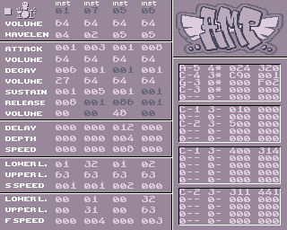

AhxMidiPlayer
1. Requirements
2. Installation
3. Configuration
3.1 Channels and ahx instruments
3.1.1 p modifier
3.1.2 m modifier
3.1.3 v modifier
3.2 Controls and instrument parameters
4. Executing amp
5. Future
6. Recomendations
7. Notes
8. Greetings
AMP is a try to get some MIDI features using the AHX engine sounds. You can assign midi channels to ahx instruments, bang notes using NOTE ON midi messages or edit ahx instrument parameters like the ADSR curve using CC midi commands.
So it can be used to play notes on midi keyboards, edit their sound using pots, sequence ahx notes in a modern DAW, grooveboxes or any other hardware or software MIDI capable. In general use your Amiga as an AHX MIDI instrument.
1. Requirements
- It should work with any Amiga capable of running the AHX replayer routines and the camd library (rom 2.+)
- It was only tested on a1200/020/030/060 and amiga 4000/040 using rom 3.1.
2. Installation
- [optional] Copy amp executable to c:
- Copy camd library into LIBS:
- [optional] Copy Microknight font into FONTS:
- Create your amp.ini configuration file
- Copy amp.ini into S:
3. Configuring amp
amp is configured using the amp.ini file. The file must be placed inside S: Using it you can configure all the midi channel to ahx instrument connections and all the configuration to be able to edit all the ahx instrument parameters (except the plist).
3.1 Channels and ahx instruments
In the channels section we assign a midi channel to an ahx instrument:
midiChannel:anxInstrument
For example:
10:5
1:1
It will map the midi channel 10 to the ahxInstrument 5.
It will map the midi channel 1 to the ahxInstrument 1
You can define up to 4 midi channels and each ahx instrument assigned will use different ahx audio channels to avoid note cuts. The ahx channel is assigned in order of definition. You can extend that basic behaviour using modifiers. The modifiers can be specified after the ahx instrument and you can use them all together.
3.1.1 p modifier
Adds poliphony to an ahx instruments. It means that this instrument will use all the 4 audio channels, so it can play up to 4 notes at the same time.
1:1p
Useful to play chords.
3.1.2 m modifier
This modifier will use the specified instrument and the next 3 ones assigned to the same MIDI instrument. It will bang notes only for C-3, D-3, E-3 and F-3, and each note will bang a different ahx instrument.
Use it to play percussions (or other instruments) selected by note. It can be used on several midi channels and its useful to play percusion patterns from rymth or groove boxes.
10:3m
Indicates that:
C-3 will be assigned to play the ahx instrument 3
D-3 will be assigned to play the ahx instrument 4
E-3 will be assigned to play the ahx instrument 5
F-3 will be assigned to play the ahx instrument 6
Only that notes will bang the replayer.
3.1.3 v modifier
Use it to add sensibility to play notes. It will bang the selected note using the Cxx (volume) command to emulate note sensibility.
2:3v
3.2 Controls and instrument parameters
In the constrols sections we assign CC midi commands to ahx instrument parameters:
ccCommand:ahxParameter
In the next example, we are assigning the CC command 56 to edit the instrument master volume:
CC_56:MASTERVOL
The list of CC commands that amp can manage is (unused/unstandard CC comands):
CC_53
CC_54
CC_55
CC_56
CC_71
CC_74
CC_79
CC_83
CC_85
CC_86
CC_87
CC_88
CC_89
CC_90
CC_102
CC_103
CC_104
CC_105
CC_106
CC_107
CC_108
CC_109
The list of ahx instrument parameters that can be edited with CC commands is:
WAVELENGTH
ATTACK
ATTACKVEL
DECAY
DECAYVEL
SUSTAIN
RELEASE
VIBRATODELAY
VIBRATODEPTH
VIBRATOSPEED
SQUAREMODULATIONLOW
SQUAREMODULATIONUP
SQUAREMODULATIONSPEED
FILTERMODULATIONLOW
FILTERMODULATIONUP
FILTERMODULATIONSPEED
PLISTSPEED
SAVE
As you can see on the list, you can edit almost all the ahx instrument parameters except the PLIST. And notice that there are some special ahx instrument parameters: PRINT, SAVE.
- PRINT can be called to print by console all the current ahx instrument values.
- SAVE can be called to save the current edit status of AHX module to file. The original file will not be overwriten, but all the save operations will use the original filename adding the ending '_amp'.
An exemple of a full amp.ini file can be:
1:1m
2:5p
3:6pv
4:7
[constrols]
CC_52:SAVE
CC_53:PRINT
CC_56:MASTERVOL
CC_102:FILTERMODULATIONLOW
CC_103:FILTERMODULATIONUP
CC_104:FILTERMODULATIONSPEED
CC_106:SQUAREMODULATIONLOW
CC_107:SQUAREMODULATIONUP
CC_108:SQUAREMODULATIONSPEED
CC_105:WAVELENGTH
CC_109:PLISTSPEED
4. Executing amp
To execute amp just call it using the ahx file to load

- The SCREEN flag will create a public screen showing the amp UI.
- The DEBUG flag will activate the debug mode, printing all the MIDI IN messages in the defined midi channels. Use this parameter only to debug your amp.ini configuration. To use amp as a midi instrument, avoid to use debug mode to get better performance.
To exit amp push:
- in cli mode: Ctrl+C
- in screen mode: Escape
5. Future planned features
- full instrument edition, including the instrument plist and hardcut values.
- new flag to clear all in memory the sequenced patterns in the mod
- solve some bugs and memory leaks
- rom 1.3 support
- github release of the amiga E source code
6. Recomendations
- Avoid to use the DEBUG mode to play notes
- send always NOTE OFF commands
- Add more priority to the amp task to get better performance
- Follow the ahx instructions to precalculate the ahx tables. You will get faster startup times because of the ahx replayer routines (important in slow machines)
7. Notes
This release solves some bugs detected by beta users using the Capacitor Party 2019 release version. As a special feature this version keeps the custom NRPN MIDI messages from the Korg Electribe machines. So it can be used in a limited way using the old Korg Electribe Series.
Thanks to mvac7 ^303bcn, tolkien ^goblins and Carles for the testing!
8. Greetings
tasita - one love
crumb - you know, this is happening because we met at Posadas 2018
mvac7 ^303bcn - you always listen to all my crazy stuff. thanks alot.
tolkien ^Goblins - for the testing time! thanks!
Carles - for the testing and the video using it with an MCP!
Obsolete crew
Screen design, artwork and pixels by mvac7 ^303bcn
Contact at neuroflip@weareobsolete.art
Obsolete.2019